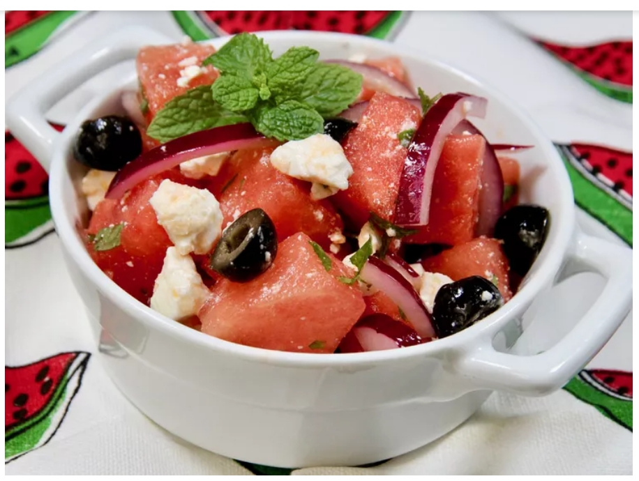

Home
Watermelon Summer Salad

Ingredients:
- ¾ cup halved, thinly sliced red onion
- 1 tablespoon fresh lime juice
- 1 ½ quarts seeded, cubed watermelon
- ¾ cup crumbled feta cheese
- ½ cup pitted black olive halves
- 1 cup chopped fresh mint
- 2 tablespoons olive oil
Instructions:
- Place the onion slices in a small bowl with the lime juice. The acid of the lime will mellow the flavor of the raw onion. Let stand for 10 minutes.
- In a large bowl, combine the watermelon cubes, feta cheese, black olives, onions with the lime juice, and mint. Drizzle olive oil over it all, and toss to blend. Dig in and be prepared for a pleasant surprise!
Any Recipes: